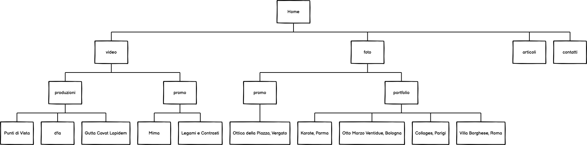
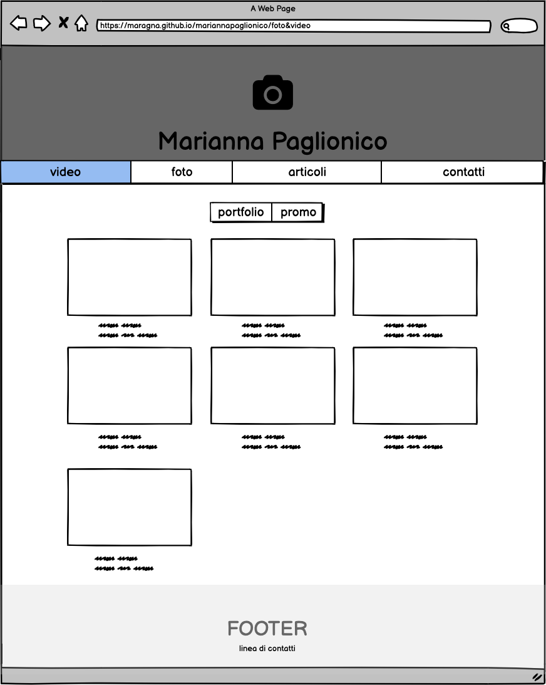
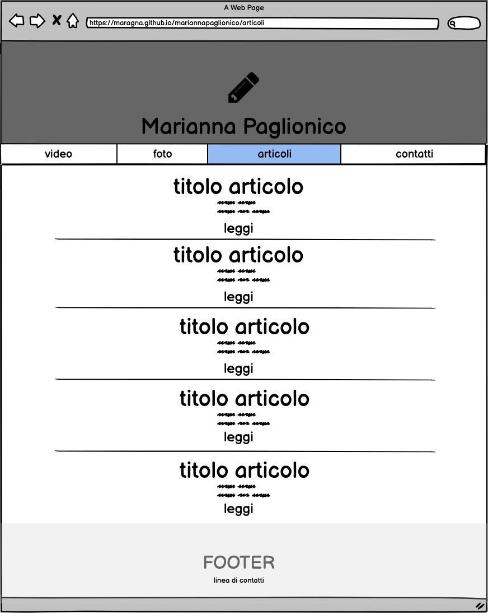
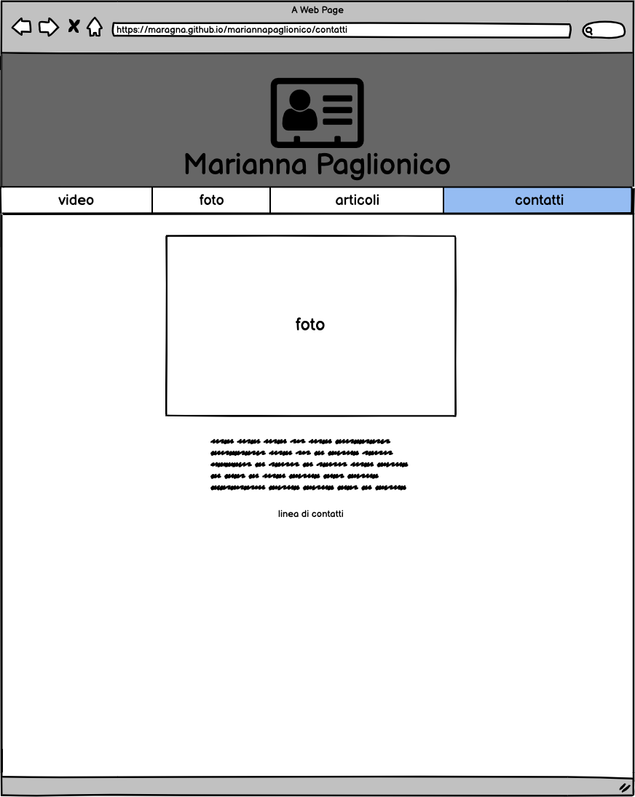
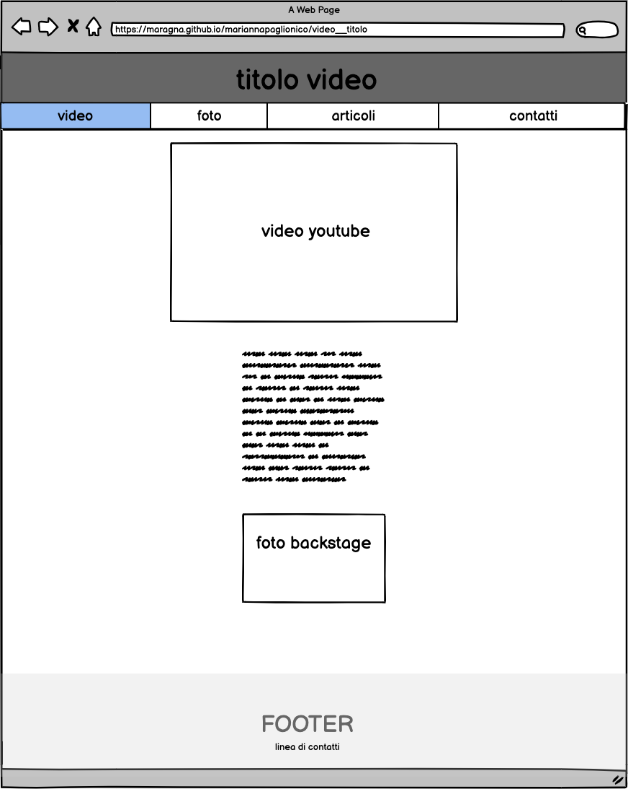
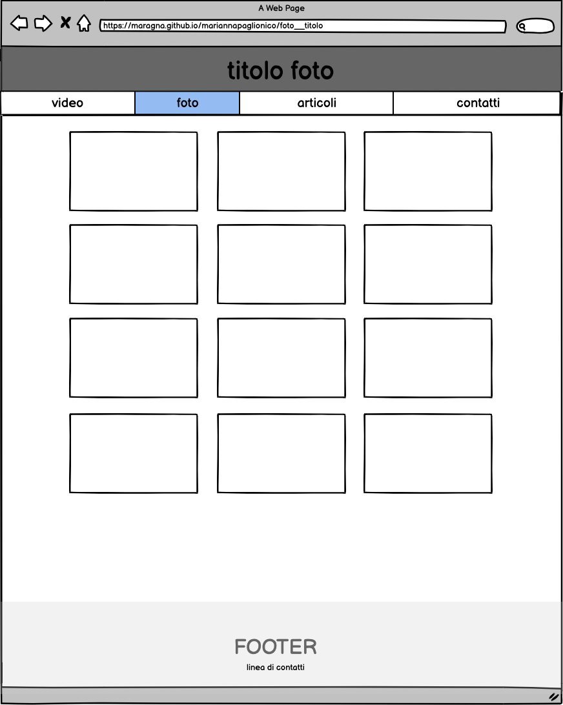
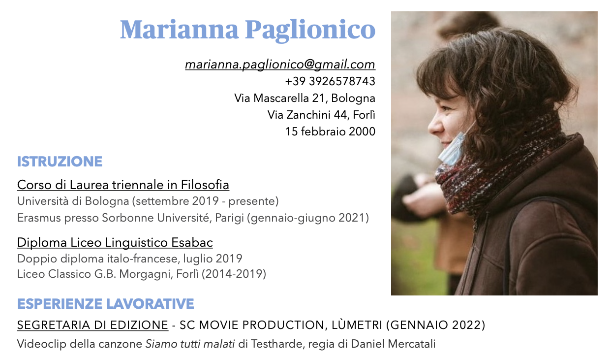
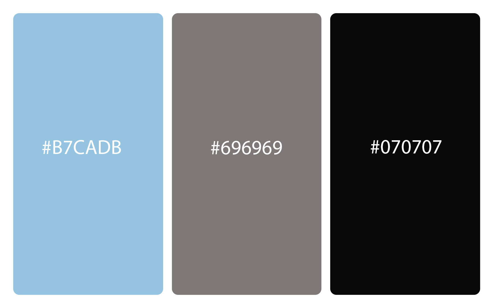
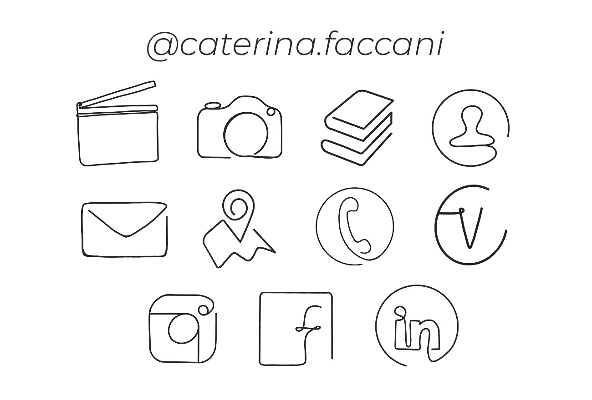
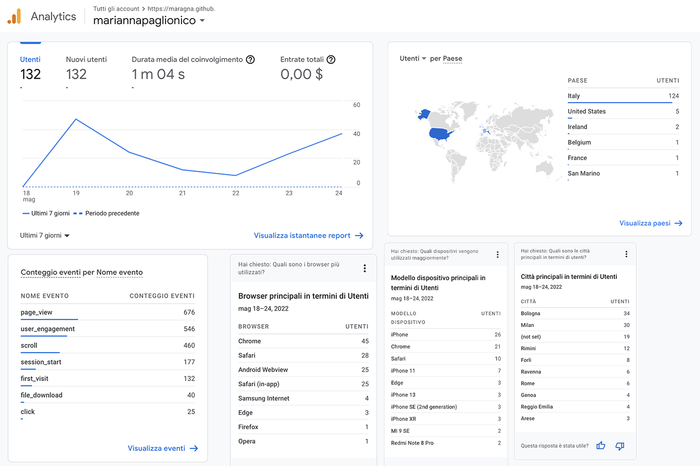

Abstract
Ho creato questo sito con lo scopo di tradurre il mio cv da fotografa e videomaker in un linguaggio interattivo e facilmente condivisibile e usufruibile per mostrare i miei lavori e trovare nuovi collaboratori e clienti. In aggiunta ho dato accesso agli articoli che ho scritto negli anni per blog online, relativi a cinema e serie tv.
Benchmarking
Obiettivo
Pubblicizzare il mio curriculum per trovare nuovi clienti e collaboratori.
Target utente
Il sito è rivolto a:
- colleghi e futuri collaboratori
- nuovi clienti alla ricerca di un tecnico audiovisivo
Competitors
Ho scelto di analizzare i siti di persone e case di produzione che conosco direttamente e con cui lavoro, tra cui:
stefanodepieri.com
simonepelatti.it
elisastefani.it
lumetri.it
ondafilm.com
horizonvideo.it
I primi tre siti sono relativi a singoli professionisti nel mondo dell'audiovisivo, gli ultimi tre a case di produzione. In questi ultimi si ripetono elementi superflui per siti dedicati a singoli professionisti, come la storia della nascita del gruppo di lavoro e la descrizione dei membri.
Tutti e sei i siti presentano lo stesso tipo di servizio: competenze tecniche per produrre audiovisivi. Per risultare accattivanti nel mercato tutti hanno scelto di mostrare i propri lavori pregressi, tramite link youtube o vimeo quando possibile, mostrando un trailer in alcuni casi, o uno showreel in cui sono raccolte clip dai migliori lavori dell'ultimo anno.
Struttura e layout
Architettura del sito
Wireframe
  
 
Look and feel
FONT:
font serif: Merriweather
font sans-serif: Montserrat
PALETTE COLORI
Ho scelto il primo colore in quanto colore dei titoli nel mio cv:

l'azzurro mi ha poi ricordato una fotografia che ho scattato e che ho deciso di mettere in testa all'homepage:

da questa fotografia tramite il sito coolors.co ho estratto i colori e composto la palette:

Linguaggi e strumenti
Linguaggi utilizzati
html
css
Strumenti utilizzati
Blog Template di Bootstrap
per alcuni aspetti grafici della pagina degli articoli
Modal Images
per aprire le foto a schermo intero
Copyright
Loghi creati da Caterina Faccani

Foto Backstage del cortometraggio MiMa - Un amore oltre il tempo scattata da Lucia Fusillo
Communication Strategy
Background
I primi tre siti sono relativi a singoli professionisti nel mondo dell'audiovisivo, gli ultimi tre a case di produzione (quindi hanno elementi superflui per siti dedicati a singoli professionisti) tra di loro ho notato similitudini:
- liste di progetti lavorativi con riferimenti immediati alle foto o ai video tramite link a youtube o vimeo
- stile efficace nonostante piuttosto povero di spiegazioni testuali
(stefanodepieri.com) - distinzione piuttosto chiara tra lavori di fotografia e videomaking
(simonepelatti.it) - distinzione dei vari progetti in base al genere (es: cortometraggio/videoclip/promo...)
(elisastefani.it - stefanodepieri.com) - cura nella creazione di grafiche e locandine rappresentative dei progetti
(elisastefani.it) - uno showreel
(lumetri.it - elisastefani.it)
(in assenza fisica di un mio showreel ho creato la composizione di video in homepage) - una chiara spiegazione dei servizi offerti
(lumetri.it - horizonvideo.it) - la storia della nascita del gruppo di lavoro o biografia dei singoli collaboratori
(horizonvideo.it - ondafilm.com)
Obiettivi comunicativi
Gli obiettivi di questo sito sono:
- tradurre in un linguaggio interattivo il mio curriculum, per mostrare in modo ordinato e lineare il mio percorso professionale
- pubblicizzare i progetti a cui ho lavorato
- esporre i tipi di servizi che posso offire mostrando progetti conclusi
- essere più visibile sul mercato e fare in modo che nuovi clienti mi trovino per i servizi che offro
Target audience e messaggio
- over 25
- ipotetici clienti: aziende, locali, associazioni sportive
- nuovi collaboratori: altri videomaker o fotografi in cerca di una figura tecnica per collaborazioni
- case di produzione o società alla ricerca di collaboratori
Promozione
Ho pubblicato sui miei social post e storie in cui racconto della nascita del sito e invito ad aprire il link
-
Al quarto giorno dalla pubblicazione del sito questi sono i risultati di Google Analytics:
Valutazione dei risultati
I risultati non si vedranno immediatamente ma spero che il sito sia utile nel breve tempo.
In questi giorni ho notato che:
- tramite Google Analytics risultano aver visitato il sito 47 nuovi utenti il giorno che ho condiviso il sito sui social, 24 il secondo giorno, 12 il terzo, 8 il quarto, 23 il quinto, quando ho condiviso il link ai miei compagni di corso e 37 il sesto. Per un totale (ad oggi, sesto giorno) di 132 nuovi utenti
- pubblicando il link al sito su facebook ho ricevuto 19 like, 3 commenti e due condivisioni, su instagram 73 like, 6 commenti e una condivisione
- le visualizzazioni dei video linkati sul sito sono aumentate da quando il sito è online
- ho ricevuto molti feedback da parte di persone che conosco che hanno scoperto la mia attività tramite la pubblicizzazione del sito sui social